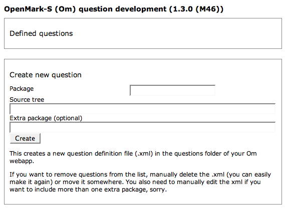

This document takes you through the process from obtaining the OpenMark source, through obtaining prerequisites, to building, and finally installing so that you can see the samples running.
You should probably set aside about an hour for this.
OpenMark consists of three servlets:
The single build script builds all three components.
The intended reader of this document is familiar with Java web applications (installing them, managing them in an application server like Tomcat).
You need to have these things set up before you begin. This document doesn't tell you how to install them.
Postgres and SQL Server are the only supported databases at present. It is possible to add support for other database servers. We will not be doing this ourselves but would appreciate contributions in this regard. See the om.tnavigator.db package within the code.
You do not need a database to run the developer servlet. Only the test navigator requires access to it.
Verdana and Times New Roman are included as standard on Windows and OS X, but users of other operating systems may need to obtain a copy of these fonts and install them in the lib/fonts folder within your Java runtime. (Information about fonts in Java.)
You need these fonts on any server that runs the developer servlet or question engine. They are not needed for the test navigator servlet.
The OpenMark code repository uses SubVersion. You can check it out without needing a dev.java.net account.
Releases and developement snapshots are tagges according to the version number policy. If you are interested in developing the OpenMark system, you should check out trunk, as described below. If you want to deplay a stable system, check out the latest stable version instead. If you want to help with testing, check out the latest development snapshot.
OpenMark's repository should begin to download.
If you are behind a web proxy, you may get a really unhelpful error from the checkout. The solution is to edit ~/.subversion/servers (MacOS, Linux) or C:\Documents and Settings\XXXX\Application Data\Subversion\servers (Windows) to tell SubVersion about your proxy.Apache Ant is a build system - sort of like make, but works in a different way. Using Ant you can define XML scripts that build a piece of software (or do something else). We use Ant to build OpenMark.
In order to build OpenMark you don't need to know how Ant works but you do need to know how to run it and how to change properties.
Don't run Ant yet! You need to finish configuring the build script first, otherwise it will fail and could potentially delete things you don't want deleting.
If you're using Eclipse, you can choose extra options such as setting properties without having to alter build.xml itself. Choose 'Run as / Ant script...' and use the tabbed dialog. Other IDEs are likely to have similar options.
It's also easy to set properties by editing the file directly. For example, here is a snippet of the included file:
<!-- Modify Axis home. Should point to an Axis 1.4 install on the build machine. Used to obtain Axis lib files. --> <property name="axishome" value=""/>
Supposing you installed Axis in /somewhere/axis-1_4, then you could edit the property line to read:
<property name="axishome" value="/somewhere/axis-1_4"/>
All the properties you need to edit are at the beginning of the file.
If you use Eclipse or another IDE you will probably notice a hideous number of errors as it attempts to build the project. This is because it's missing a bunch of prerequisite software programs from other people (Sun, Apache) which you need to install.
The jar files contributed by these prerequisites will be built into the OpenMark web applications as needed, so you don't need to install them in any particular location. It's OK to just set them up in your own folder for the purpose of building.
OpenMark builds using an Ant build script build.xml which contains properties for the location of each prerequisite. You need to edit these properties, either by editing build.xml directly or by using facilities in your IDE to set them up, once you've downloaded the prerequisites.
If using an IDE, you should see that there are no errors in the project after you configure all the below prerequisites. (There are still some warnings, I'm afraid.)
(Required for building all components.)
The servlet API is included in your application server. If you use Apache Tomcat, it's in your Tomcat install folder under common/lib.
(Required to build question engine and test navigator.)
(Required to build test navigator.)
(Required to build test navigator.)
You may also need to set the following build options as Ant properties.
See comments in build.xml for details of other options which basically affect how the developer servlet is set up. The defaults should work correctly when running the developer servlet on your own machine and you can change them later in the developer servlet's web.xml anyway.
Run Ant to build the system. You should see output like the following:
Buildfile: /Users/sam/Documents/workspace/openmark-svn/build.xml
init:
[delete] Deleting directory /tmp/om-build
[mkdir] Created dir: /tmp/om-build
compile:
[mkdir] Created dir: /tmp/om-build/compiled
[javac] Compiling 182 source files to /tmp/om-build/compiled
copydata:
[copy] Copying 40 files to /tmp/om-build/compiled
jar:
[mkdir] Created dir: /tmp/om-build/jars
[jar] Building jar: /tmp/om-build/jars/om-dev.jar
[jar] Building jar: /tmp/om-build/jars/om-engine.jar
[jar] Building jar: /tmp/om-build/jars/om-navigator.jar
qengine-base:
[mkdir] Created dir: /tmp/om-build/webapps/om-qe
[mkdir] Created dir: /tmp/om-build/webapps/om-qe/WEB-INF
[mkdir] Created dir: /tmp/om-build/webapps/om-qe/WEB-INF/lib
[mkdir] Created dir: /tmp/om-build/webapps/om-qe/questioncache
[copy] Copying 2 files to /tmp/om-build/webapps/om-qe/WEB-INF
[copy] Copying 1 file to /tmp/om-build/webapps/om-qe/WEB-INF/lib
qengine:
[copy] Copying 8 files to /tmp/om-build/webapps/om-qe/WEB-INF/lib
[jar] Building jar: /tmp/om-build/webapps/om-qe.war
tnavigator-base:
[mkdir] Created dir: /tmp/om-build/webapps/om-tn
[mkdir] Created dir: /tmp/om-build/webapps/om-tn/WEB-INF
[mkdir] Created dir: /tmp/om-build/webapps/om-tn/WEB-INF/lib
[mkdir] Created dir: /tmp/om-build/webapps/om-tn/logs
[copy] Copying 51 files to /tmp/om-build/webapps/om-tn/WEB-INF
[move] Moving 1 file to /tmp/om-build/webapps/om-tn
[copy] Copying 9 files to /tmp/om-build/webapps/om-tn
[copy] Copying 1 file to /tmp/om-build/webapps/om-tn/WEB-INF/lib
[jar] Building jar: /tmp/om-build/webapps/om-tn.war
tnavigator:
[copy] Copying 10 files to /tmp/om-build/webapps/om-tn/WEB-INF/lib
[jar] Building jar: /tmp/om-build/webapps/om-tn.war
devserver:
[mkdir] Created dir: /tmp/om-build/webapps/om
[mkdir] Created dir: /tmp/om-build/webapps/om/WEB-INF
[mkdir] Created dir: /tmp/om-build/webapps/om/WEB-INF/lib
[copy] Copying 1 file to /tmp/om-build/webapps/om/WEB-INF
[copy] Copying 3 files to /tmp/om-build/webapps/om/WEB-INF
[copy] Copying 1 file to /tmp/om-build/webapps/om/WEB-INF/lib
[jar] Building jar: /tmp/om-build/webapps/om.war
all:
BUILD SUCCESSFUL
Total time: 19 seconds
That's it; the system is now built. You can find the resulting webapps, assuming you didn't change the default build folder, in /tmp/om-build/webapps. They are available in both unpacked and packed .war formats.
The developer servlet is for question authors. It allows you to build and test individual questions. It only supports a single user at a time, so it's not suitable for running tests.
You should see:

A range of sample questions are included in the samples folder of the OpenMark source tree. In order to test that the developer servlet is working we will set it up to build one of these questions.
This will create an XML file defining all the information needed to build the question package, and the question should appear in the list up above.
Click Build next to the question in the list. You should see output like the following:
Buildfile: questionbuild.ant compile: [mkdir] Created dir: /Users/sam/Documents/webapps/om/questions/tempbuild [javac] Compiling 11 source files to /Users/sam/Documents/webapps/om/questions/tempbuild copydata: copymeta: [copy] Copying 1 file to /Users/sam/Documents/webapps/om/questions/tempbuild jar: [jar] Building jar: /Users/sam/Documents/webapps/om/questions/samples.numeric.singleentry.jar clean: [delete] Deleting directory /Users/sam/Documents/webapps/om/questions/tempbuild all: BUILD SUCCESSFUL Total time: 3 seconds
After it successfully builds, the question will immediately run. (If there were syntax errors, it would remain on the build page so you can see them.) You should be able to try out answering the question and also restart the question with various accessibility options for testing.
The question engine is a Web service that runs questions. The test navigator provides a user interface, manages access permissions, and stores information in a database.
Install the Web applications by deploying /tmp/om-build/webapps/om-qe.war and om-tn.war, or copying the /tmp/om-build/webapps/om-qe and om-tn folders in their entirety into your application server's web application folder.
The test navigator is configured with a file navigator.xml in the root of the webapp. You need to modify this file, so it doesn't exist by default. Begin by copying navigator.sample.xml to navigator.xml, then open the file for editing.
You probably don't need to change any of the other settings right away. (By the way, be careful! This page tells you how to set up a system to make sure it works, not how to secure it for production use on assessed tests.)
When you're done, save navigator.xml and restart the test navigator webapp.
To make life easier, a sample test is preinstalled. It's a test that helps students for an Open University course determine whether they understand simple diagrams. (Please note that the version of this test that we took to use as a sample may not have been completely finished - it is included as an example only and doesn't necessarily reflect the final product.)
The test navigator doesn't have a home page; instead you need to directly access the test. The URL you go to includes the name of the test's 'deploy file' inside the testbank folder. In this case, that is mu120.module5.deploy.xml so the URL to visit, if you are using Tomcat with default configuration, is http://localhost:8080/om-tn/mu120.module5/.
The test should now begin and you should be able to try it out.
You can build javadoc API documentation for the source code - vitally important if you want to start creating questions. This isn't built by default, so just build the javadoc Ant target to get it.
You've got all parts of the system working - great. Now you run into the limits of the documentation we've written. :)
Existing documentation intended for University staff - and not revised - is included in the doc folder. This includes documents for question authors (two of them? hrm, wonder which is better), the format of the test/deployment files, and about how you can embed Om questions inside other HTML pages.
Apart from that you might want documentation on the following, which is already possible in the existing system:
For that you could try pestering us in the forums here and maybe we will improve the documentation!